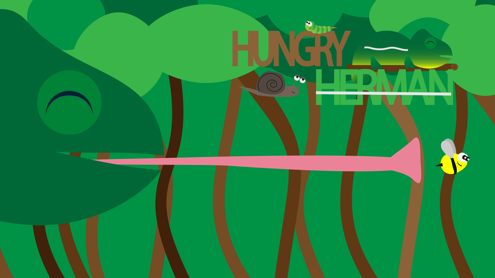

GRUNDLÆGGENDE ANIMATION
I tema 04-grundlæggende animation blev vi introduceret for bla. JavaScript, baggrundsdesign, aktivitetsdiagram, state machine diagram og spil elementer. det første i processen var at få en ide og lave en papirprototype. papirprototype går ud på at få en ide om hvordan spillet skal fungerer, er spillet en wack-a-mole eller skal elementerne falde fra himlen. derudover skulle vi vælge en stil eksempelvis kawaii, hvad er karakteristisk for denne stil? hvis man kigger på kawaii som stil, er det ofte runde, bløde former, der giver en fornemmelse af nuttet og læner sig meget op af stilen Baby bias. Vi kom ind på bouba og kiki-effekten, det er altså vigtigt at vide hvad de forskellige former giver af indtryk. runde cirkler giver eks. sød fornemmelse mens en trekant giver eks. en snedig fornemmelse. Vi skulle derfor tænke over de forskellige principper og effekter når vi skitserede. Der blev tegnet en masse i hånden, som bla.figurerne, elementer som liv tid osv og baggrund, før vi rentegnede i Adobe Illustrator. I Illustrator lavede vi de forskellige figurer og elementer til vores spil, dette gjorde vi ved hjælp af et vector Cheat Sheet, med vector Cheat Sheet kunne vi sammensætte figurer og lave nye vha. pathfinder. Vi brugte hjælpeværktøjerne aktivitetsdiagram og state machine diagram, et aktivitetsdiagram er et diagram over hvad der skal ske hvornår, eks. kigger ud af vinduet, regner det?, ja, tager en paraply med før jeg går. hvorimod et state machine diagram er hvad der sker i de forskellige funktioner eller hvad den “kalder på” i JavaScript. I CSS lavede vi nogle animationer vores JavaScript kunne “kalde på” når man trykkede på de forskellige figurer eller et tidselement der langsomt forsvinder. Det var her vi blev introduceret for Javascript, her lærte vi bla. hvordan man gav et element en random position, if/else, animationend osv.
Hvad ville jeg gøre anderledes?
Hvis jeg skulle gøre noget anderledes ville jeg give mine baggrunde mere dybde og have brugt længere tid på dem. Da min baggrund skal forestille en jungle ville det være oplagt at have flere blade og træer i forskellige størrelser og nuancer, give den en forgrund og baggrund. Derudover er mit spil lidt for langt så det ville jeg korte ned.
link til sitet:
Tema 04- Dokumentation siteDOKUMENTATION/ INSPIRATION


.jpg)